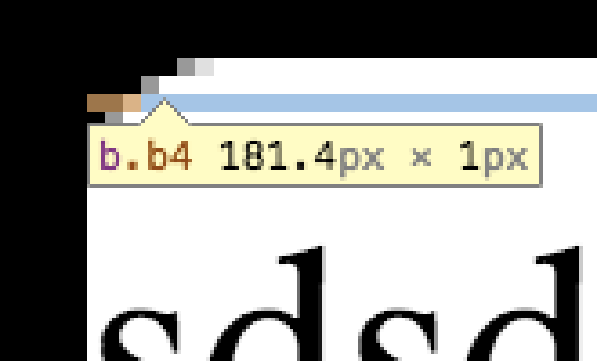
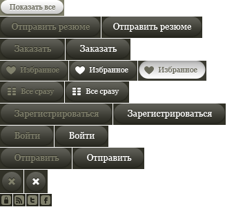
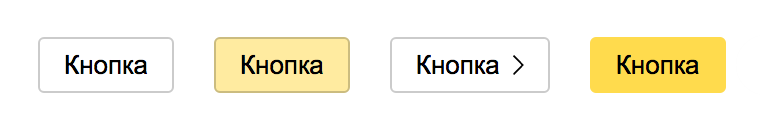
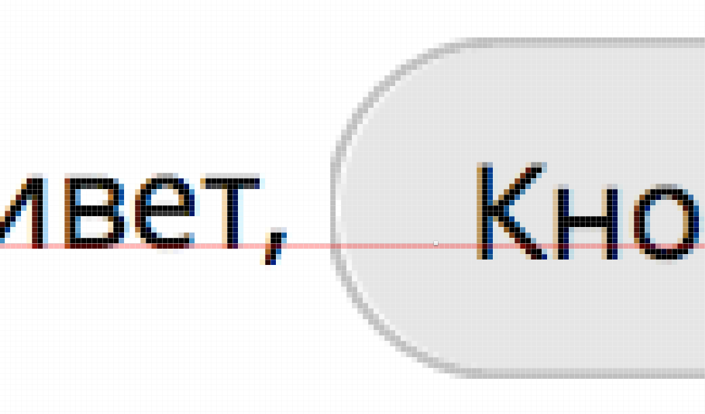

Роман Комаров
Web Standards Days, Санкт-Петербург, 20 июня 2015 года
<div class="button">
Кнопка!
<div class="top"><i class="i1"></i><i class="i2"></i><i class="i3"></i><i class="i4"></i><i class="i5"></i><i class="i6"></i><i class="i7"></i><i class="i8"></i></div>
<div class="top"><b class="b1"></b><b class="b3"></b><b class="b4"></b><b class="b5"></b><b class="b6"></b></div>
<div class="bottom"><i class="i8"></i><i class="i7"></i><i class="i6"></i><i class="i5"></i><i class="i4"></i><i class="i3"></i><i class="i1"></i><i class="i2"></i></div>
<div class="bottom"><b class="b6"></b><b class="b5"></b><b class="b4"></b><b class="b3"></b><b class="b1"></b></div>
</div>



<div><span><a><button>vertical-align: middle не спасёт.

.Привет, Кнопка и пока.
Общее решение: http://kizu.ru/blog/flex-baseline/
Спойлер: решается через inline-flex, кучу проблем в ФФ и лишний враппер
inline-flex + <button> + Firefox = 💩Тупо не работает.
И никакие хаки не помогут.
.button {position: relative;overflow: visible;display: inline-block;padding: 0;border: none;margin: 0;cursor: pointer;-webkit-user-select: none;-moz-user-select: none;-ms-user-select: none;user-select: none;box-sizing: border-box;max-width: 100%;font: inherit;white-space: nowrap;text-decoration: none;color: inherit;background: none;-moz-appearance: none;}.button::-moz-focus-inner {padding: 0;border: none;}.button-content {display: block;display: -webkit-inline-box;display: -webkit-inline-flex;display: -ms-inline-flexbox;display: inline-flex;box-sizing: border-box;width: 100%;border-radius: inherit;}.button-content:before {float: left;content: "\a0";width: 0;min-width: 0;}.button-text {display: block;-webkit-flex-shrink: 1;-ms-flex-negative: 1;flex-shrink: 1;-webkit-flex-basis: 100%;-ms-flex-preferred-size: 100%;flex-basis: 100%;overflow: hidden;text-overflow: ellipsis;min-width: 0;}.button-text _:-ms-input-placeholder,:root .button-text {-ms-flex-preferred-size: auto;flex-basis: auto;width: 100%;}.button-before,.button-after {float: left;-webkit-align-self: center;-ms-flex-item-align: center;align-self: center;-webkit-flex-shrink: 0;-ms-flex-negative: 0;flex-shrink: 0;}.button-after {float: right;-webkit-box-ordinal-group: 2;-webkit-order: 1;-ms-flex-order: 1;order: 1;}
<button type="button" class="button"><span class="button-content"><span class="button-before">🙀 </span><span class="button-after"> 🙀</span><span class="button-text">Текст кнопки<span></span></button>
.button-content
display: inline-flex
.button-text
display: block
overflow: hidden
flex-shrink: 1
.button-before, .button-after
float: left
flex-shrink: 0
.button-after
float: right
order: 1
.button-content:before {float: left; /* для фолбека */content: "\a0";width: 0;min-width: 0; /* для старой Оперы */}
.button-text {flex-shrink: 1;flex-basis: 100%; /* не `width` */overflow: hidden;min-width: 0; /* для старой Оперы */}
Привет, IE!
:root .button-text,_:-ms-input-placeholder {flex-basis: auto;width: 100%;}
* {flex-shrink: 0;min-width: 0;}